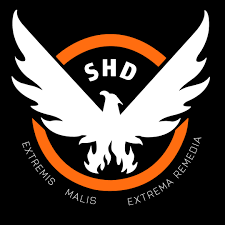
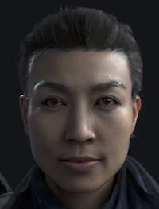

When society falls We rise.
사회가 무너질 때 우리는 일어선다.
미합중국 정부의 국가안정화 비밀 요원 조직. 상징은 불사조, 공식 명칭은 전략국토부(Strategic Homeland Division), 약칭 SHD이다. 작중에서는 SHD를 "에스 에이치 디"로 띄어 발음하지 않고 "셰이드(shade)"로 발음하는 경우가 많다. 대통령 훈령 제 51호의 발령 시까진 서로가 디비전인지 조차도 알지 못하다가 자력으로 소집되어 임무를 수행한다. 디비전 요원의 선발기준은 알 수 없으며, 스카우트 방식은 SHD모병관이 요원으로서 적합한 요원을 뽑는 듯하다. 기존 요원들이 구두로 추천을 하는 경우도 많으며, 그 사람이 적합하다고 생각되면 디비전에 합류할 것을 제안한다. 이러한 이유로 디비전 요원들은 몇몇 친한 동료들은 알 수 있어도 모든 요원들을 알지는 못한다. 다만 각 요원들은 SHD 스마트 워치를 통해 정부 연결망에 접속되기에 상대방이 요원인지 아닌지 구별할 수가 있다. 하지만 각자의 판단에 따라 서로를 공격할 수 있으며, 이 경우가 구현된 것이 다크 존의 로그 PVP 시스템이다. 또, 요원들에게는 상당한 전문 기술과 높은 전투력이 요구되지만 훈련 방법과 장소/기간/규모 등은 모두 불명이다.
2001년 미국 전역에 걸쳐 실시된 생화학 테러 대응 훈련 '검은 겨울 작전(Operation Dark Winter)'의 시뮬레이션은 충격적인 결과를 예측한다. 고작 며칠 사이에 사회가 산산히 무너져 내리고 말 것이었다. 그러한 파국을 막기 위해 조지 워커 부시 대통령이 제정한 대통령 훈령 51호(Directive 51)에 따라 비밀리에 설립되었으며 소속 요원들은 평시엔 일반인과 똑같이 생활하다가 사회 시스템이 붕괴하는 상황이 발생하면 사태 수습과 질서 회복을 위해 자율적으로 활동을 개시하도록 되어있으며 이를 위한 초법적 권한을 부여받고 있다. 이후 가까운 미래에 발생한 걷잡을 수 없는 대량 감염 사태에 뉴욕은 무정부 상태에 빠지게 된다. 비로소 더 디비전이 활동을 개시할 때가 온 것이자, 게임의 시작점이다. 기본적으로 사복을 입고 활동하지만 험한 환경을 누벼야 하기에 다른 부대보다 진보된 장비를 보급받는다. 보통 2~4명의 소규모 정찰분대를 이루지만 극단적으로 단독 작전을 선호하는 인원들도 있다. 작전은 낮과 밤을 가리지 않으며 필요한 경우 무력을 서슴치 않고 집행할 수도 있다. 이들은 세 지국으로 나뉘며 정보 처리와 자료 관리를 담당하는 분석국, 국가 안전 담당 및 해당 참모진 형태로 정부 관계자들과 연락하는 전략국, 그리고 플레이어들이자 발로 뛰어 임무를 수행하는 전투원들인 전술국으로 나뉜다. 전술국 요원들은 다시 의료, 기술, 방위 분야로 나뉘어 기술과 능력을 발전시킨다.
계속되는 소요사태에 여론을 의식한 월러 대통령에 의해 총 두 번에 걸쳐 활성화되었다. 수뇌부에선 여론 악화등의 이유로 반대하였으나 독단적으로 승인하여 요원들은 소집된다. 1차 투입 요원들은 2차 투입 요원들보다 더 우수한 장비와 지원을 받았으나 판데믹의 혼란과 지휘부의 무능, 예상을 뛰어넘는 사태의 심각함으로 인해 궤멸하고 일부만이 살아남아 독자 활동에 나섰다. 그 후 이를 보고를 받은 월러 대통령이 1차 투입 요원들의 로그 행위나 독단적 행보에 디비전을 폐지하고 2차 투입을 거절하나 JTF장교의 진심 어린 부탁에 마지못해 승인한다. 2차 투입 요원들은 투입 초반 기습으로 인해 지휘부가 궤멸하고 다수의 사상자가 발생했으나 이에 굴하지 않고 임무를 수행했으며 작중 시점에서도 계속 투입 중이다.
플레이어 캐릭터. 스토리 초반에 페이 라우를 제외한 다른 2차 투입 요원들과 디비전 지휘부가 탄 헬리콥터가 의문의 공격에 폭파되면서 2명이 살아남았으나 플레이어를 뺀 NPC이자 2차 투입 디비전 요원인 페이 라우는 죽기 직전까지의 중상으로 움직이는 것조차 불편한 상태가 되었다. 이 때문에 2차 투입 요원중 유일하게 현장 투입이 가능한 요원으로 말 그대로 플레이어다.
2. 페이 라우 (Faye Lau)
본작의 메인 NPC. 중국계 이민자 2세로 게임 도움말에서 뉴욕 토박이라고 소개된다. 어렸을 때 부모를 일찍 여의고 여동생을 보필하는 소녀가장이 되어 경제학과를 졸업한 뒤 전략 연구 석사를 취득한 라우는 ROTC에 지원한 뒤 이후 전략국토부로 스카우트된다. 뉴욕 토박이에 현장 활동을 간절히 바래서 디비전 요원이 된 이후에도 뉴욕에서 생활을 계속 하며 디비전을 지원했다. 헌신적인 애국자라고 하며 여동생인 헤더 라우(Heather Lau)가 있다.
작중 활동
1차 투입 사건 이후 2차로 본격적인 실전 투입되어 플레이어 요원과 함께 브루클린 일대의 폭도들를 같이 제압하고, 디비전 2차 투입 요원의 요청을 통해서 헬기에 탑승하려고 하지만 이 때 누군가의 습격으로 하반신 뼈가 부러지고 눈 한쪽을 잃는 큰 부상을 입고 현장에 나갈 수 없게 되어 버린다. 이후 상황을 납득한 페이는 작전 기지에서 플레이어에게 미션 브리핑과 각종 정보를 제공해주게 된다. 헬기 폭발 당시 다리가 박살 나고 눈 하나가 다쳐 안 보이는 와중에도 주인공을 폭발 현장에서 벗어나게 도와주고, 맨해튼에 도착했을 때 JTF 대원이 철수한다는 말에 절대로 안 된다며 우리가 여기를 되찾을 것이라고 대답한다.3. 루이스 창 (Louis Chang)
주로 목소리로만 등장한 디비전 2팀 지휘관. 인게임 도움말에서는 앞에 붙어야 하는 지부나 2팀을 잘라먹고 그냥 '사령관'으로 나오는 번역 오류가 있다. 브루클린의 질서를 회복한 후, 맨해튼으로 이동하려다 페이 라우와 플레이어를 제외한 다른 디비전 요원들과 함께 폭사한다. 이후 디비전 2의 통화기록에서 월러 대통령에게 2팀 투입을 허가받는 내용으로 등장한다.
4. 노블 분대
1차 투입 디비전 요원 팀으로, 토니 가르지아, 아킬 후프스터, 세실리아 앤, 더글라스 서튼(더그)의 4인으로 구성되어 있으며, 실종자 추적 임무에서 그들의 행적을 확인할 수 있다. 디비전 현장요원 본연의 임무인 약탈자 제압 및 민간인 보호를 수행 중, 라이커들이 탈옥했다는 보고를 입수하고 이를 저지하러 갔으나 라이커들의 대규모 기습 공격을 받았고 쫓기고 쫓긴 끝에 하나하나 죽어간다. 정찰을 간 사이 팀원을 모두 잃은 최후의 생존자 더그 서튼은 라이커들을 추적하고, 일면식도 없는 민간인 한 명을 구출하기 위해 라이커들로 가득 찬 건물에 홀로 돌격한다. 그 민간인이 바로 생존 가이드북에 메모를 남기는 에이프릴 캘러허로, 에이프릴이 더그의 장비를 가지고 다크존으로 향하는 ECHO가 남겨진 것을 볼 수 있는데 노블 분대의 생존한 마지막 요원인 더그 서튼이 에이프릴을 구출하다 사망한 것을 볼 수 있다. ECHO 주변에는 수많은 라이커들의 시체가 널브러져 있고 복장이 다른 시체 한구가 모포로 덮여 있는데, 사망한 더그 서튼이다. 그가 사망함과 동시에 결국 노블 분대는 전멸하였다. 변절하지 않은 요원들이 뉴욕의 혼돈 속에서 어떤 말로를 맞이했는지를 보여주는 이들이다.
5. 다크존 보급관
다크존 입구의 세이프 존인 게이트 쪽에 있는 상인들. 잘 보면 디비전 요원의 시계와 배낭, 디비전 마크를 달고 있다. 분석국이냐 전략국의 보급요원으로 추정된다.
6. 기타 디비전 요원들
실종 요원 수집 과제나 기록에 남은 디비전 요원들. 대부분 전사 혹은 변질되었다. 요원 시계를 줍는 지역이나 요원 신분증을 보면 그들의 끝을 어느 정도 유추할 수 있는데, 어떤 요원의 신분증은 알아볼 수 없을 정도로 훼손이 됐거나 혈흔이 있는 장소에서 시계가 발견되기도 한다. 반대로 변절했거나, 변절을 유추할 수 있는 요원들의 신분증은 상당히 깨끗하다. 시체는 확인되지 않지만 대부분 단서들은 구석진 곳에서 발견된다.
작품 내적으로나 외적으로나 상당히 무력한 모습을 보이는데 우선 "Enemey Factions" 트레일러에서 라이커들에게 잡혀 죽은 JTF 대원들의 시체가 상당히 많이 나온다. 일러스트에서 LMB에게 인질로 잡히는 모습도 나오고, 몇몇 영상에서 클리너들에게 산 채로 불타죽거나 위에 나온 것처럼 라이커들에게 유린당하는 등 대우가 영 좋지 못하고 폭도들이 JTF 대원을 포로로 잡는 경우도 있다. 인게임에서 폭도들의 대화를 들어보면 LMB는 무서워하지만 JTF는 호구로 취급한다. CG 트레일러에서도 등장하는데 감염 매개체인 지폐를 소각하고 있다. 인게임에서도 도로를 지나다니다 보면 심심치 않게 폭도나 라이커들한테 일반적으로 당하고 있거나 이미 죽은 시체들이 널부러져 있다. 사실 게임 중 만나는 대부분의 JTF 요원들은 군인이 아니라 클리너에 가담하지 않은 환경 미화원이라던가 경찰의 상담원 심지어는 유기견 센터의 공무원들 같이 겨우겨우 긁어모아온 사람들인데다 비전투 요원으로 얼마 없는 인원들에 남은 군경 장비를 입혀보내 팀을 이뤄 순찰과 정찰을 도는 식으로 그나마 치안을 지키며 국방부, 경찰서나 소방서 등 고도의 훈련을 받은 공무원들은 이미 대다수가 전사/순직한 것으로 짐작된다.
1. 제시카 캔들 박사 (Dr. Jessica Kandel)
전 미국질병통제예방센터 소속의 의사, 베타에서 폭도들에게 잡혀있다 구출되는 여의사. 자존심이 강하며 스릴을 좋아한다고 한다. 의료동 업그레이드 담당. 동성애자이며 미션 중에 자기 전처 이야기를 하는 걸 보면 결혼까지 했었던 모양(뉴욕은 연방대법원 판결 이전부터 동성 간 결혼이 가능했다.) 사이드 미션 중에 이 전처의 행방을 찾는 미션이 있다. 로딩 중 팁에는 치료법을 찾는 것이 더 많은 이들을 구할 수 있는 방법이라고 생각한다고 한다.
2. 로이 베니테즈 반장 (Captain Roy Benitez)
전 NYPD 마약 수사관이자 현재 JTF의 지휘관. 청렴하며 불의를 무서워하지 않는다고 한다. 9.11 테러 당시 긴급대응팀으로 있었다고 한다, 보안동 업그레이드 담당. 런칭 트레일러에서 디비전 요원들을 아끼고 있으며, 뉴욕을 유린하는 적에 대해 간단히 설명하는 모습으로 등장한다. 지역 곳곳에서 얻을 수 있는 음성 데이터 중에 베니테즈 반장이 JTF 요원들에게 디비전에 대한 설명을 해주는 내용이 있다. 어찌 보면 제 3자에게 디비전의 결성 목적이나 역할에 대해 듣게 돼서 기묘하지만, 들어볼 만하니 시간이 여유로운 사람은 열심히 수집해서 들어보자. 여기에서도 베니테즈 반장의 디비전에 대한 신뢰가 드러난다.
3. 폴 로즈 (Paul Rhodes)
테크 업그레이드 담당, 9.11 테러 당시 아내를 잃었다고 한다. 전 미군 소속의 전투공병이었으나, 이라크 침공 당시 바스라에서 있었던 모종의 일로 전역하여 PMC에 취직해버린 것으로 추정된다. 기계 전문가라는 평가에 걸맞게, 기계공학과 전자공학 등이 관련되는 임무에서는 빠지지 않고 등장하여 도움을 준다. 한국어 번역은 많이 순화되었지만, 플레이어를 돕는 사람들 중에서는 단연코 이 양반의 입이 제일 걸걸하다. 기본적으로 뭔가 마음에 안 드는 일이 보일 때마다 fuck을 꼭 넣어 투덜거리고, 무전을 통해 면박 줄 때는 요원이든 다른 NPC든 가리지 않고 거친 대사를 사정없이 내뱉는다. 공무원을 비롯한 정부 인사들과 정부 조직에 대한 평가도 몹시 박한 편. 거침없는 입담과 삐뚤어진 성격과는 달리 사고방식 자체는 상당히 개념이지만, 그와는 별개로 편집증이 상당히 중증인 셈. 기술동의 업그레이드가 어느 정도 진행된 후에는, 요원에게 의미가 담긴 일침을 놓기도 한다. 플레이어가 게임의 스토리를 즐기면서 스스로 생각해볼 수 있도록 질문을 던지는 것.
4. JTF 안전가옥 책임자들
JTF의 성격을 잘보여주는 이들로 얘기를 들어보면 지역 경찰이나 JTF 소속 군인 외에도 일반 뉴욕 공무원들도 있다.
마틴 하젠: 브루클린 지역 안전가옥의 오퍼레이터
초반 암울한 상황에 대해서 간략하게 설명하는 역할을 한다.
셸리 스트롱: 우체국 작전 기지의 오퍼레이터.
처음 대화시 디비전에 대해 반신반의 하는 모습을 보이며 임무 완료 하면 JTF 대원들이 내기를 했다고 알려준다. 다들 플레이어가 임무 실패하고 죽는 쪽으로 걸었다고 말하는데 셸리 본인은 상관하지 않았으나 사실은 돈이 없어서 끼지 못했다고. 또 어느정도 요원을 신뢰하고 있었다 얘기 한다.
마리온 햄플스테인: 캠프 허드슨/첼시 지역의 오퍼레이터.
가정주부인지 주인공을 자식처럼 여기면서도 상당한 아들바보라 임무를 완료하면 그녀의 아들인 베니에 대해서 계속 언급하면서 아들이 주인공 같은 사람이 됐으면 좋겠다고 말을 한다
제이비 캘러: 허드슨 야드의 오퍼레이터.
전직 드라마 배우였는지, 디비전 요원의 활약을 자기 액션 드라마 몇화에 빗대서 칭찬하기도 하고, 조언을 주겠다고도 하며 임무를 완수할시 자기 TV쇼의 배우로 출연해달라는 드립을 친다.
브라이스 톰슨: 가먼트 지구의 오퍼레이터.
힌두교 신자로 카르마 등을 주로 언급한다. 입이 상당히 거칠기도 한데, 현상수배 보조 미션의 브리핑에서 그놈에게 총알이 뇌를 관통하는 경험을 해줄 필요성이 있다고 말한다. 그 와중에 자신의 차크라를 정화해야 한다고 급히 말을 고치는 것을 보면 상당히 웃기다.
사이먼 카포닉: 텐더로인 지구의 오퍼레이터.
심한 알러지가 있어 항상 콧물을 훌쩍이고 있으며 주변 환경이 굉장히 더러운 것에 대해 경기를 일으키기도 한다.
켈리 가르시아: 헬스 키친 오퍼레이터.
디비전에 환상을 가지고 있는 인물로 아마 요원에게 가장 우호적인 사람이라고 해도 될 정도로 꽂혀 있다. 시계 구입처를 묻는다든가 외모와 의상이 멋지다고 칭찬한다든가 사태 끝나면 같이 식사나 하자고 한다거나. 서브미션 할때. 디비전 요원들을 "대단한 사람들"로 표현함. 한마디로 요약하자면 디비전 빠돌이다. 윈스턴 제퍼슨: 타임스퀘어의 오퍼레이터. 좀 삐뚤어진 인물로, 다른 오퍼레이터들은 다들 요원을 만나게 되면 어느정도 반갑다는 반응을 보이지만 이 인간은 '만나서 정말 쓸모있다' 며 운을 띄운다.
안소니 자파: 플랫 아이언 지구의 오퍼레이터.
이탈리아 억양이 짙은 영어를 쓰며 전직 마피아 출신이다. 본래는 자기 구역에서 적당히 보호비를 걷고 지역을 보호하는 길거리 마피아였으나, 아웃브레이크 이후 부하 한명은 클리너에 가담해버리고, 구역에 인정사정 안보는 라이커들이 쳐들어와 현재는 JTF에 가담한 상태.
폴 아귈라: 킵스 베이의 오퍼레이터.
플레이어에게 건들건들한 태도가 특징이다. 피난하는동안 생긴 유기견들을 데려왔는지 이름이 무전에서 언급된다. 민간인 한 명이 보급품 하나를 발견했는데 자신이 해결할 힘이 없어 JTF에 연락을 했다고 하자 '혹시 모르잖아? 그냥 놈들한테 당할까 겁나니까 안가는 걸지도.'라고 말하는 것으로 보아 상대가 누구건 약간 빈정대는 버릇이 있는 듯.
알버트 거트닉: 머레이 힐의 오퍼레이터.
해당 지역에 76년이나 살았다고 하며 대정전과 태풍 샌디가 왔을 때에도 꿋꿋히 버텨냈다는 자부심이 있는 모양. 빨리 보급품을 안 가져오면 JTF를 배신할까 생각한다고한다. 한국에 있었다고 언급한 걸 보면, 아마도 한국에서 주한미군으로 복무한 적도 있었던 듯 하다. 때문에 상당히 명예를 중시하는 모습을 보이며 이런 이유 때문에 LMB가 민간인들의 보급품을 탈취한다는 것에 분노하는 모습을 보인다.
리사 몬텔리: 터틀 베이의 오퍼레이터
테레사 로페즈: 미드타운 이스트의 오퍼레이터
쉴라 블랙모어: 부두의 오퍼레이터